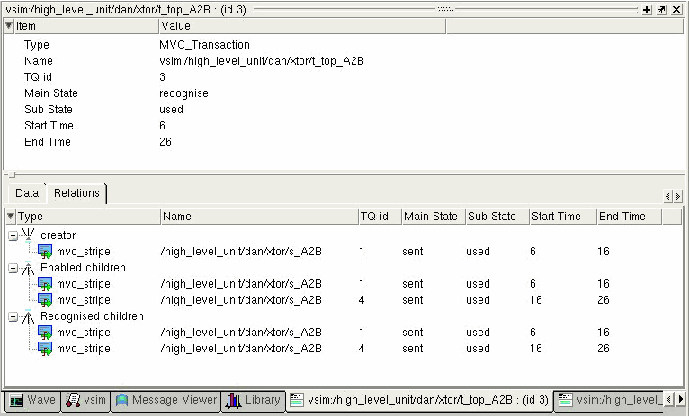

You can update
contents of the Transaction window, including transaction name in
the label of the window, with data from a new instance.
Procedure
- Select the Questa Verification
IP transaction instance/stream in Wave window.
- Drag and drop the instance
into either the upper pane or lower pane of an open Transaction
window.
Results
Figure 1 shows details for instance /high_level_unit/dan/xtor/t_top_A2B,
and lists the relations of that instance.
Figure 1. Transaction Window -
Relations Tab